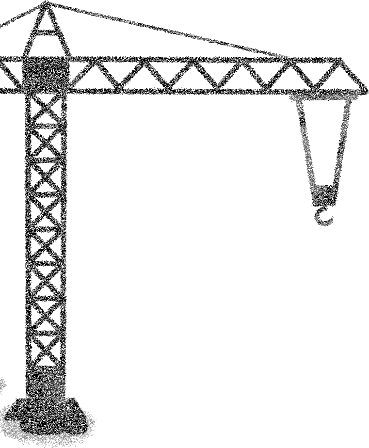
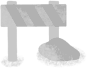
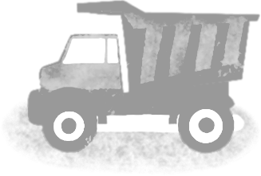
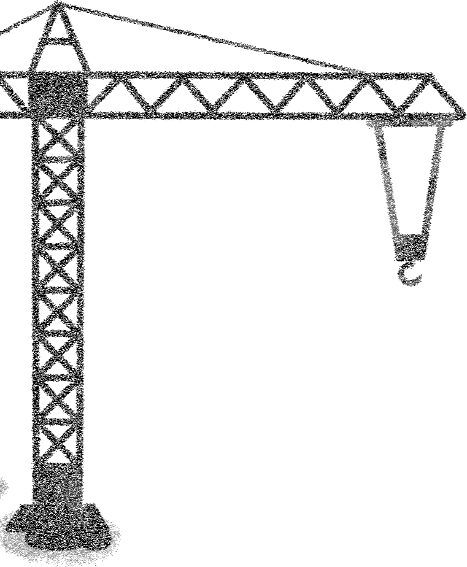
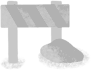
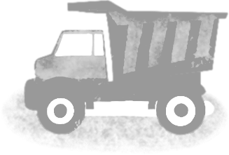
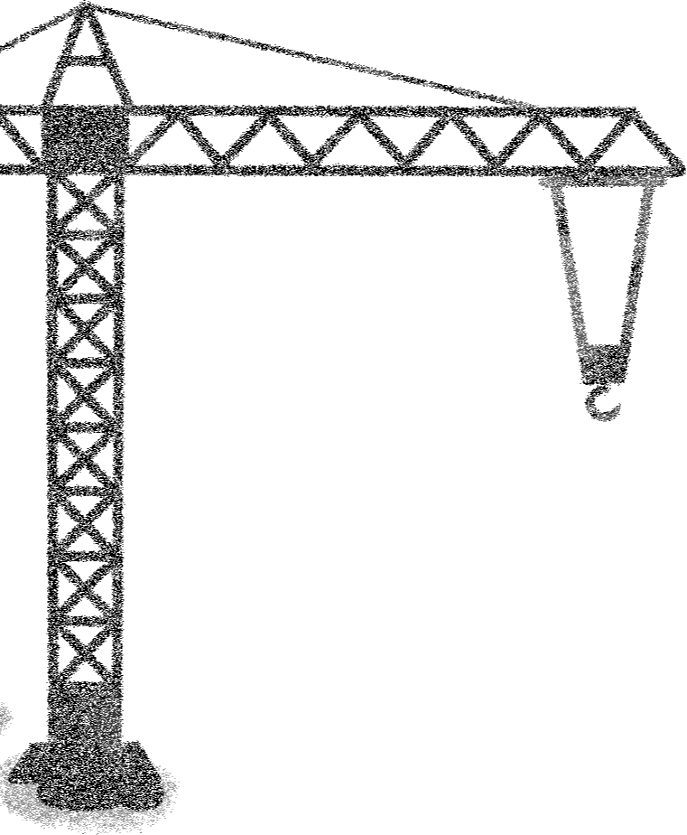
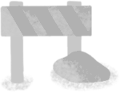
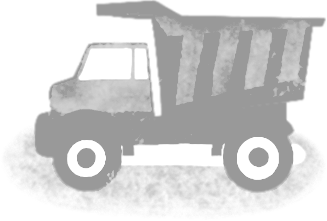
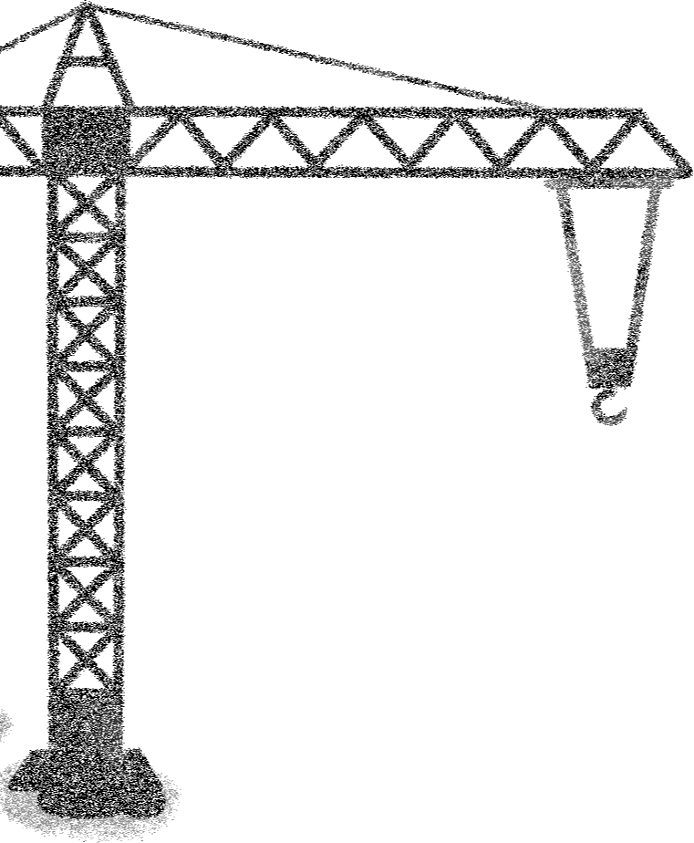
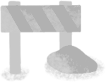
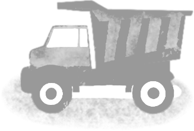
Em 2011, foram descobertos campos de gas em Mocambique, pelo que muitas grandes empresas de energia aproveitaram as vantagens de investir neles. Ao mesmo tempo, pouco ou nenhum imposto e pago a Mocambique, o que deveria ser. Junte-se ao Mestre Mozam para a historia.
Mestre Mozam chega ao trabalho para descobrir que o edificio esta a beira do colapso.
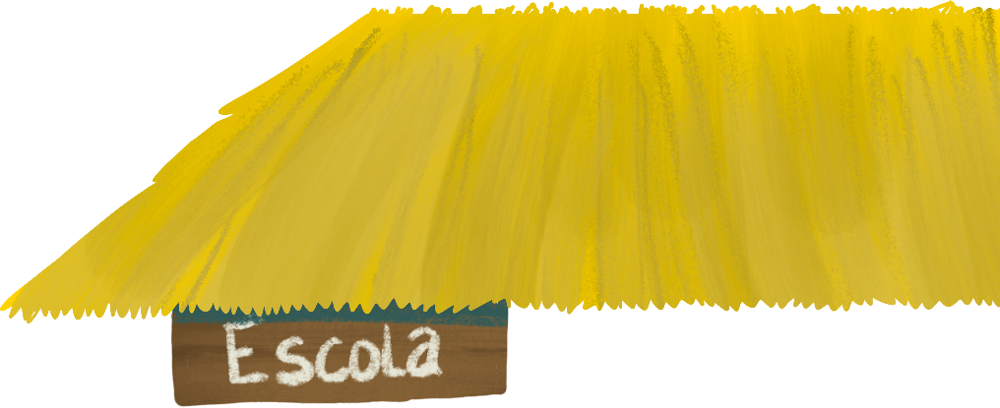 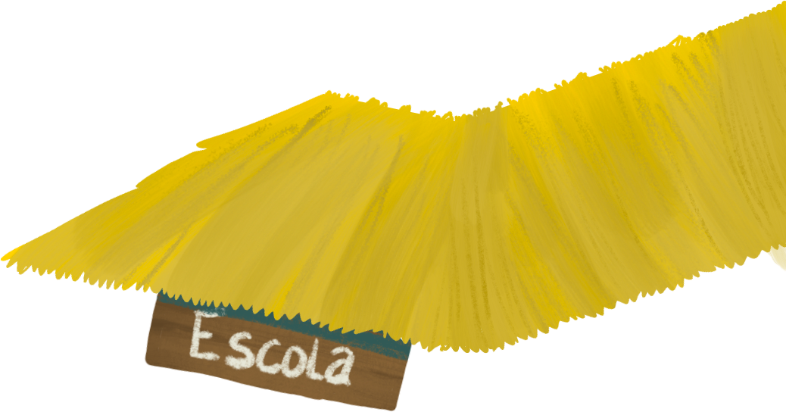 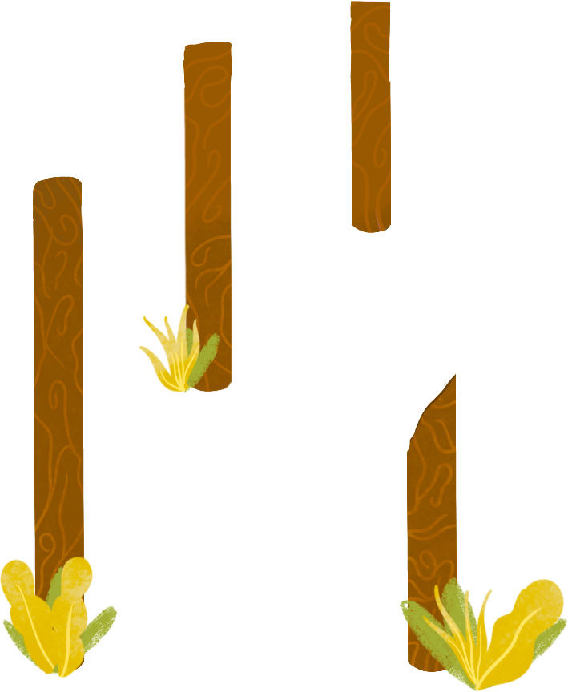 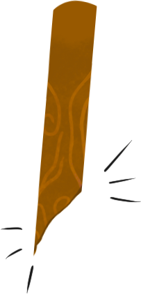 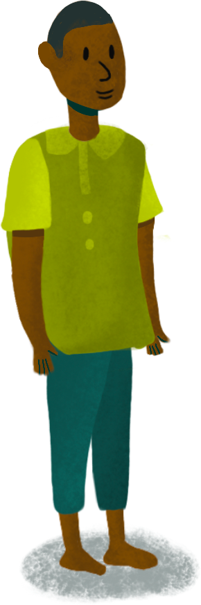 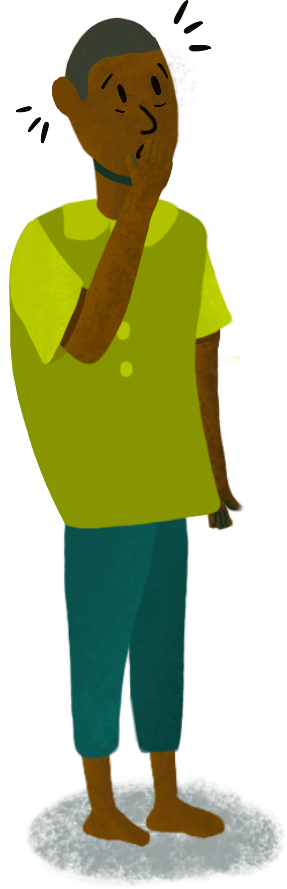 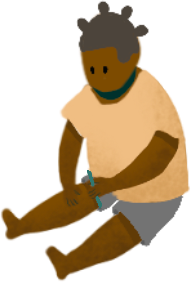
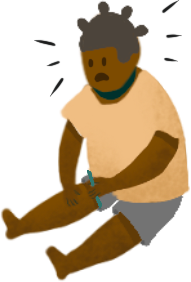
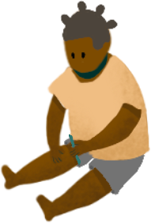
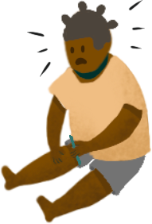
Mestre Mozam vai pedir reparacao ao Oficial Ble.


 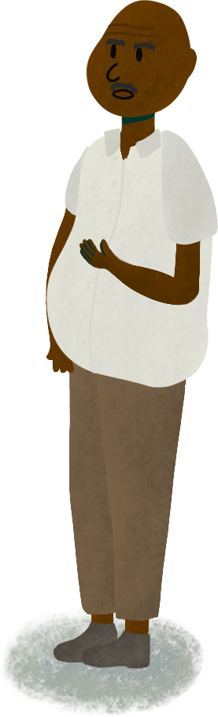
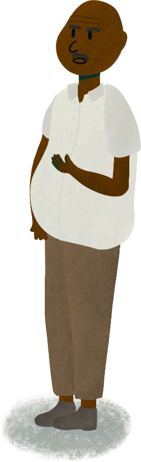
?
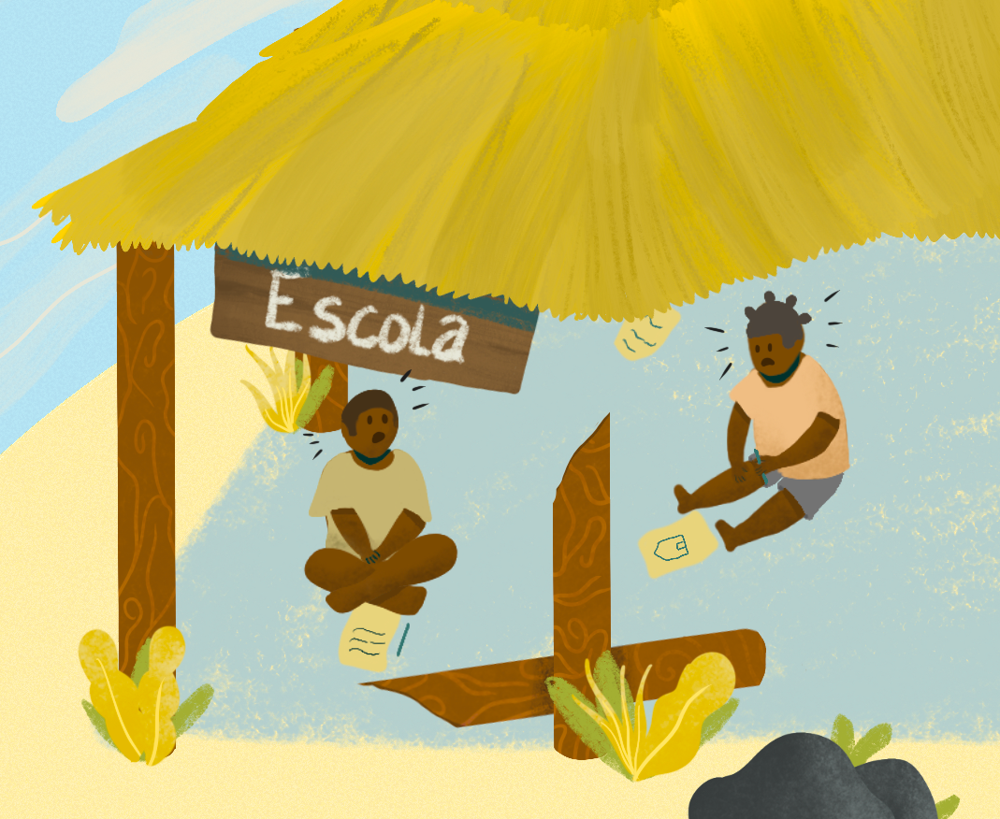#!?@
Solucao?
Dinheiro!
Oucam...
Gas
Gas encontrado em Cabo Delgado em 2011
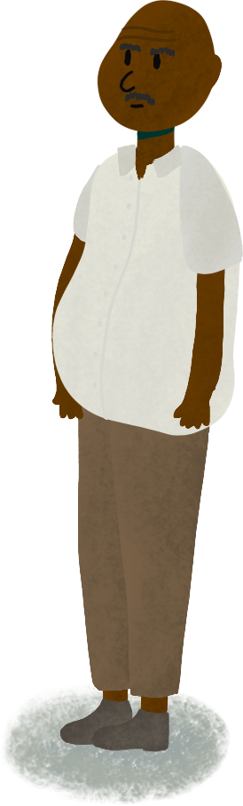
As empresas de energia podem investir sem pagar impostos
Como??
Antes da descoberta do gss, havia pouco comercio com Mocambique proveniente do estrangeiro,
razao pela qual fizeram acordos comerciais com alguns paises.
Ao faze-lo, concordaram um com o outro que, se comerciarem com Mocambique,
pouco ou nenhum imposto tera de ser pago.
Apos a descoberta do gas, as empresas poderiam beneficiar destes tratados,
estabelecendo-se nesses paises.
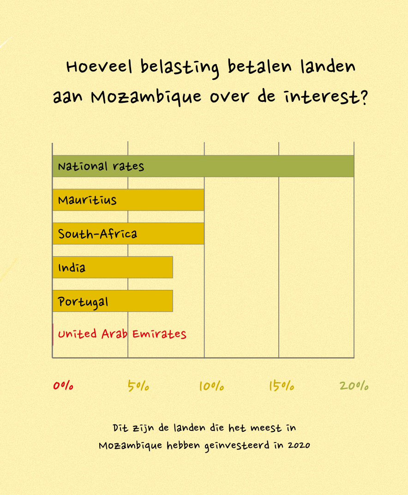Como se segue?
Precisamos de quebrar os tratados actuais.
Isto dar-nos-a o dinheiro a que temos direito.
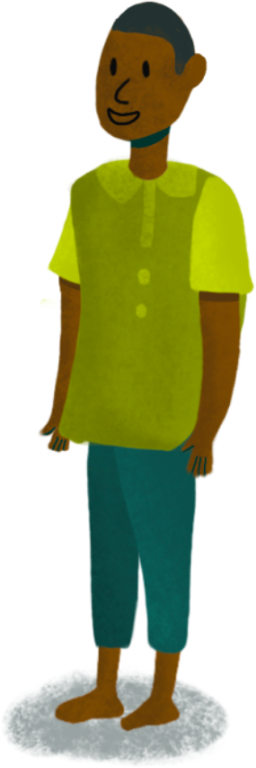Futuro